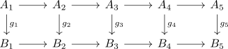

homology snake lemma
Proposition
Let

be a diagram in an abelian category where the rows are exact.
Let
\begin{align*}
\mathrm{ker}(g_3) \rightarrow \mathrm{ker}(g_2) \rightarrow \mathrm{ker}(g_1) \\
\mathrm{coker}(g_5) \rightarrow \mathrm{coker}(g_4) \rightarrow \mathrm{coker}(g_3) \\
\end{align*}
be the morphisms obtained from applying the kernel/cokernel functor.
Then there exists a canonical isomorphism between their homology